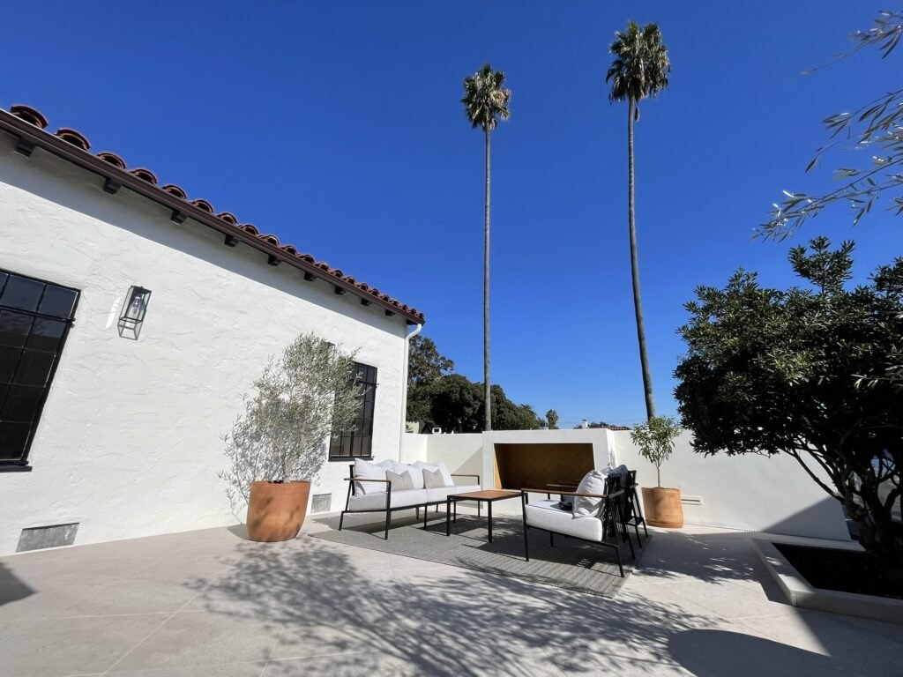
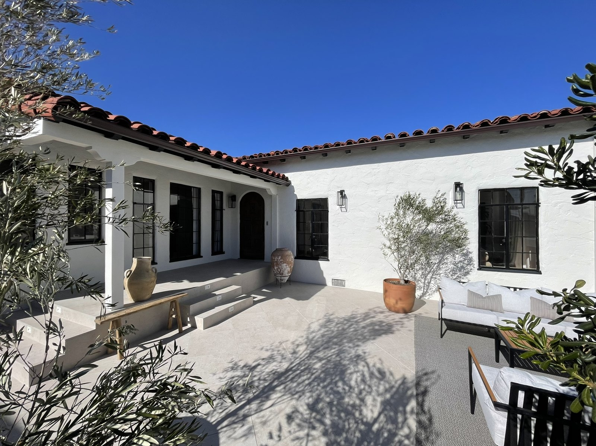
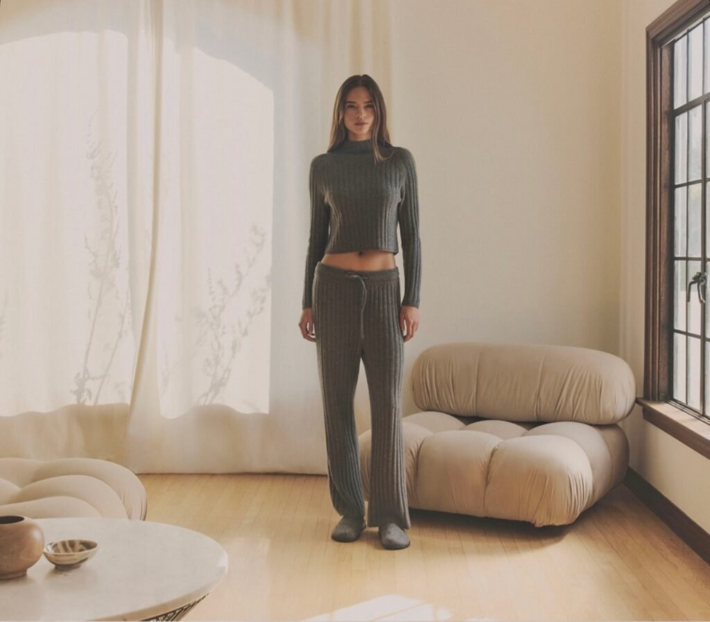
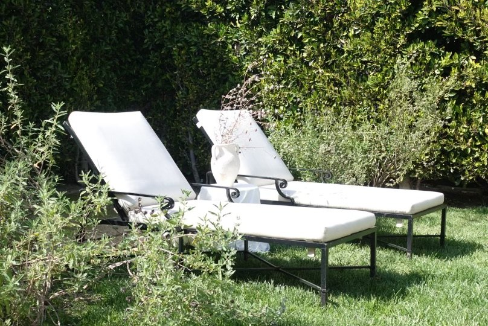
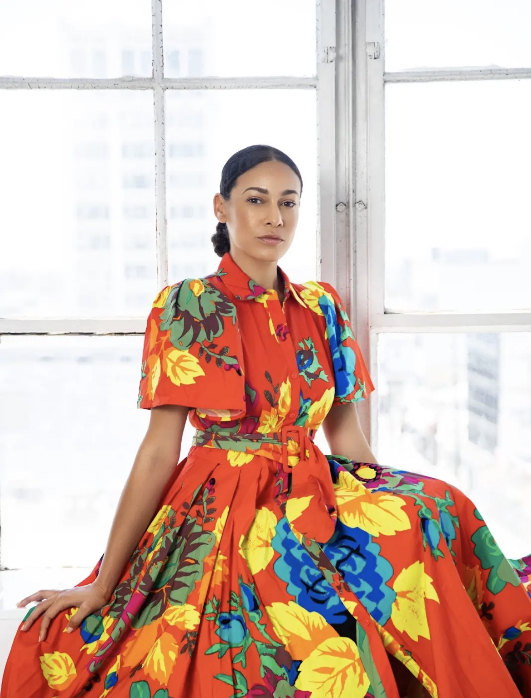

The patio
White stucco, long shadows and open sky. A south-facing setting with a distinctly Mediterranean feeling.
Explore the patio ↗
A Spanish-style home, thoughtfully reimagined by Chandra. Follow the light from the sunken living room to the open patio, then into the garden. Find the setting for your next story.
Photography / Film / Creative productions

White stucco, long shadows and open sky. A south-facing setting with a distinctly Mediterranean feeling.
Explore the patio ↗
Arched passages, a sunken living room and a designer kitchen. Spaces to create with texture, shape and daylight.
Explore the interiors ↗
A lush backdrop for quieter moments, outdoor scenes and a different side of the house.
Explore the garden ↗
Two Palms West began with Chandra’ vision for a 1930 Spanish-style property. Through its remodel and design, she shaped a private photography and film space with a character of its own.
Her architectural eye connects the rooms, the patio and the garden — giving creatives a setting with plenty to discover.
Meet the founder ↗Planning a campaign, an editorial or a film? Explore the current listings for availability, rates and production details.
Tell Chandra what you have in mind through the current booking platforms.